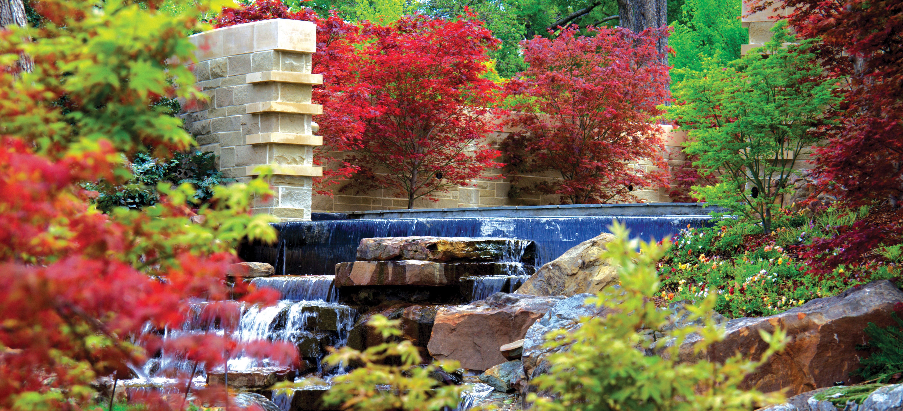
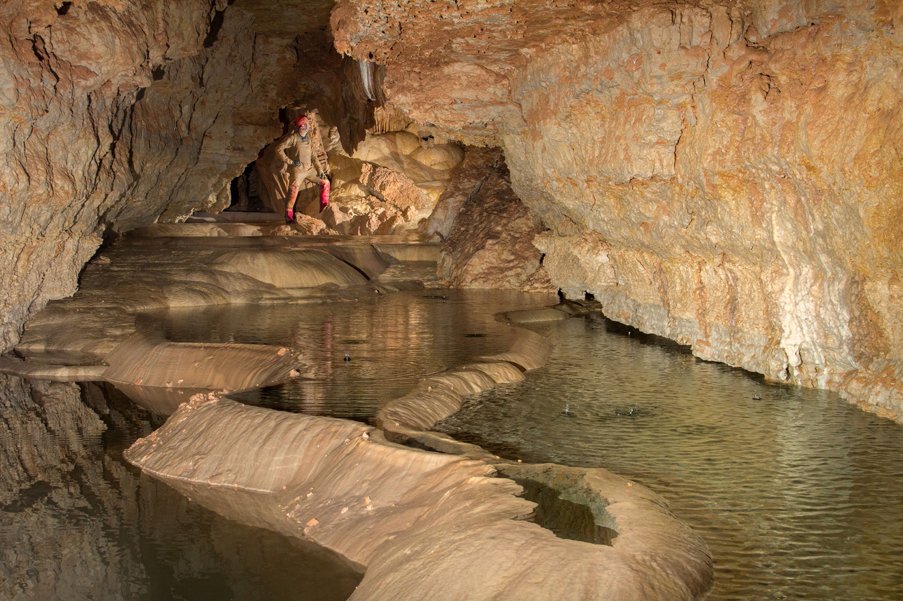
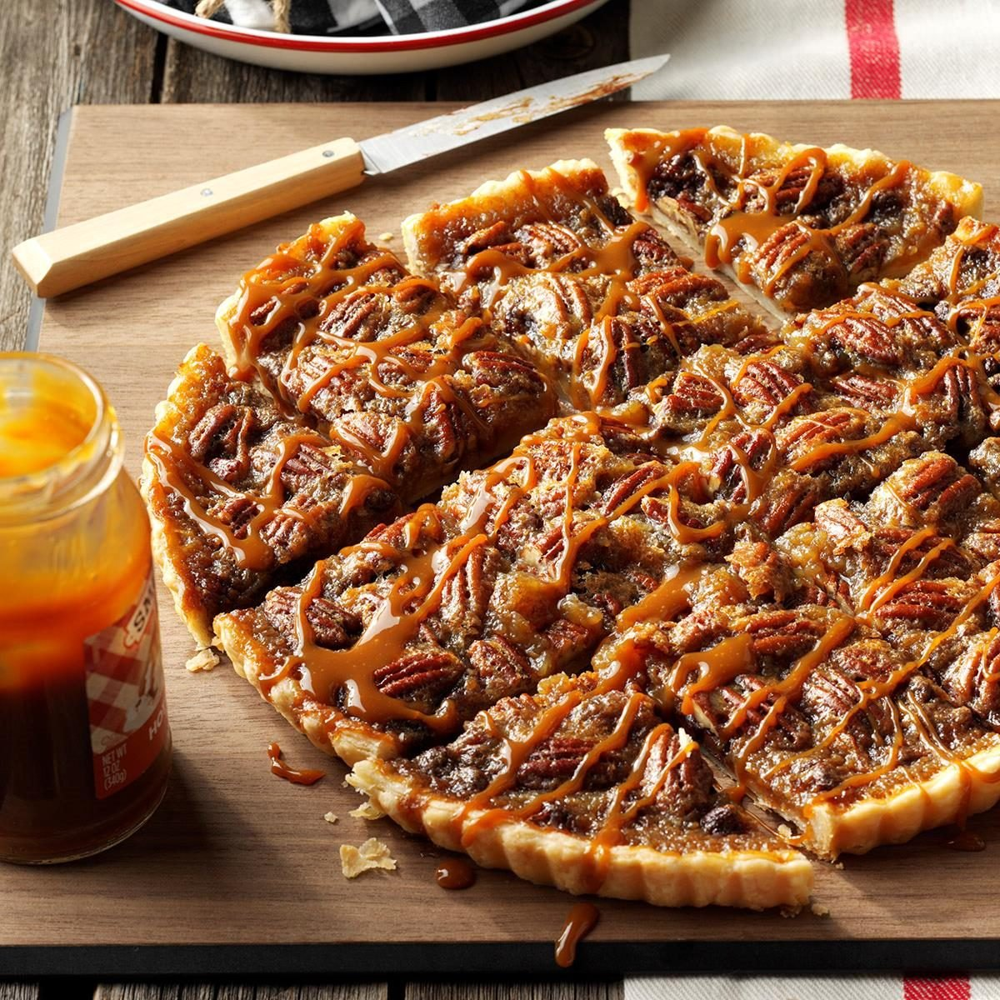
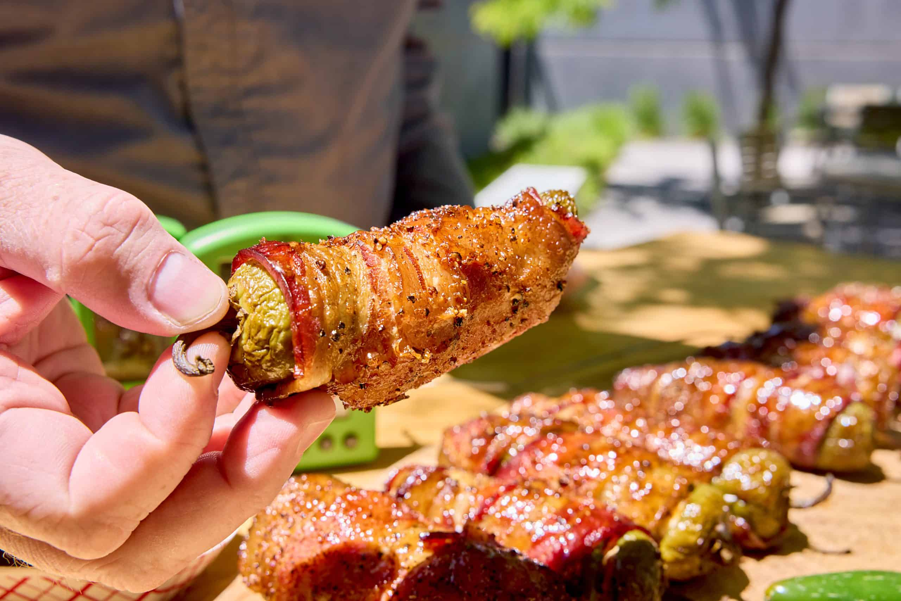

Welcome
“Journey through the Lone Star State of Texas, a land celebrated for its bold character, wide-open spaces, and deep cultural heritage.With its spirited cities and iconic landscapes, Texas offers unforgettable experiences shaped by history, pride, and genuine hospitality.”
Tourist Spots
-
Dallas Arboretum and Botanical Garden
The City of Dallas Park and Recreation Department contracts with the Dallas Arboretum and Botanical Society to manage the garden's day-to-day operations. The mission of the Dallas Arboretum and Botanical Garden is to build and maintain a public garden and arboretum that promotes the art, enjoyment, and knowledge of horticulture while providing opportunities for education and research.
 -
Natural Bridge Vaverns
Natural Bridge Caverns is one of Texas’ largest underground attractions that is best explored on a guided tour. The Discovery Tour takes you through the most spectacular part of the caverns 180 feet underground, whilst the Hidden Passages tour shows you a system of huge underground chambers—or experience both on a combo tour.
 -
San Antonio River Walk
Also known as Paseo del Rio, this 15-mile-long river walk is a must-do in San Antonio. Opt for a self-guided walking or bike tour of the riverside paths, lined with beautiful cypress trees, shops, museums, hotels and of course, Tex-Mex restaurants. But one of the best ways to experience the River Walk is on a hop-on, hop-off cruise, which glides past iconic spots like the Arneson River Theatre, Marriage Island, and the San Antonio Museum of Art. Visit during festivals and holidays like St Patrick's Day and Christmas for exciting river parades and spectacular light illuminations.

Famous Food
-
Favorite Chocolate-Bourbon Pecan Tart
This Bourbon Chocolate Pecan Tart has a sweet tart crust, a silky chocolate Bourbon pecan pie filling and a crunchy pecan topping! This is a no-fuss, decadent treat.
 -
Texas Twinkies
This appetizer is similar to jalapeno poppers, but the recipe calls for meat and barbecue sauce, making the dish a bit more hearty. Texas Twinkies are a great tailgate snack, cookout app or even a side dish if you like to add heat to your weeknight dinners.
 -
Chicken Fried Steak
This iconic Texas dish was actually adapted from wiener schnitzel by German and Austrian immigrants. Tenderized cube steak is dredged in flour and deep fried until crisp and golden brown. It's often served with a creamy gravy. The dish is so Texan that in 2011 the Texas legislature declared October 26 "Texas Chicken Fried Steak Day."